Gianluigi Buffon
Gianluigi Buffon, detto Gigi (Carrara, 28 gennaio 1978), è un dirigente sportivo ed ex calciatore italiano, di ruolo portiere, capo delegazione della nazionale italiana.
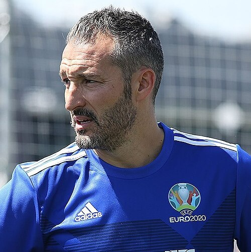
Gianluca Zambrotta
Gianluca Zambrotta (Como, 19 febbraio 1977) è un dirigente sportivo, allenatore di calcio ed ex calciatore italiano, di ruolo difensore o centrocampista.

Fabio Cannavaro
Fabio Cannavaro (Napoli, 13 settembre 1973) è un allenatore di calcio ed ex calciatore italiano, di ruolo difensore, commissario tecnico della nazionale uzbeka.
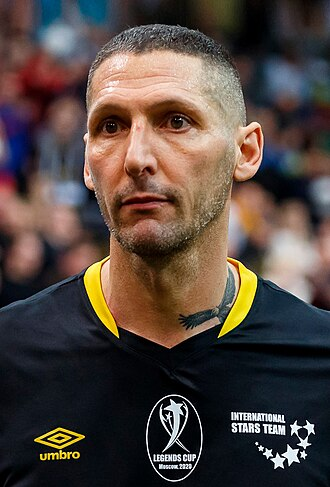
Marco Materazzi
Marco Materazzi (Lecce, 19 agosto 1973) è un allenatore di calcio ed ex calciatore italiano, di ruolo difensore. Con la nazionale italiana è diventato campione del mondo nel 2006.
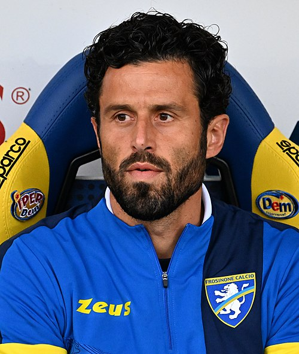
Fabio Grosso
Fabio Grosso (Roma, 28 novembre 1977) è un allenatore di calcio ed ex calciatore italiano, di ruolo difensore o centrocampista, tecnico del Sassuolo. Con la nazionale italiana è diventato campione del mondo nel 2006.
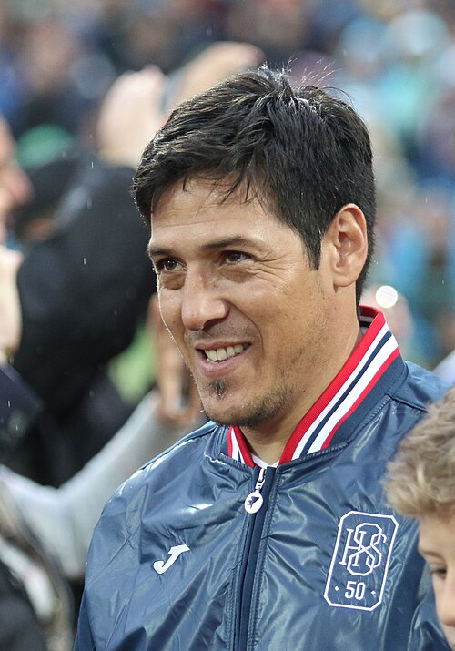
Mauro Germán Camoranesi
Mauro Germán Camoranesi Serra (Tandil, 4 ottobre 1976) è un allenatore di calcio ed ex calciatore argentino naturalizzato italiano, di ruolo centrocampista, tecnico dell'Anorthōsis. Con la nazionale italiana si è laureato campione del mondo nel 2006.
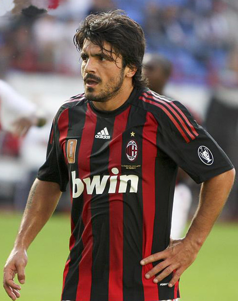
Gennaro Gattuso
Gennaro Ivan Gattuso, detto Rino (Corigliano Calabro, 9 gennaio 1978), è un allenatore di calcio ed ex calciatore italiano, di ruolo centrocampista, commissario tecnico della nazionale italiana.
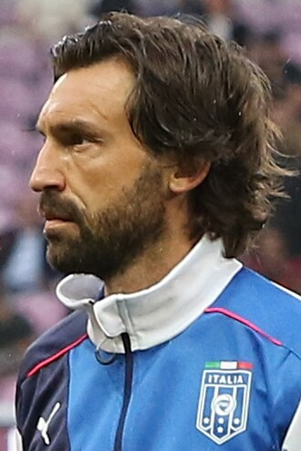
Andrea Pirlo
Andrea Pirlo (Flero, 19 maggio 1979) è un allenatore di calcio ed ex calciatore italiano, di ruolo centrocampista, tecnico dello United FC. Con la nazionale italiana è diventato campione del mondo nel 2006 e vicecampione d'Europa nel 2012.
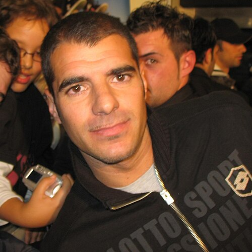
Simone Perrotta
Simone Perrotta (Ashton-under-Lyne, 17 settembre 1977) è un ex calciatore italiano, di ruolo centrocampista. Con la nazionale italiana si è laureato campione del mondo nel 2006.
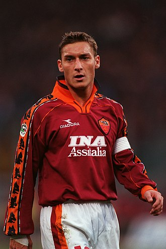
Francesco Totti
Francesco Totti (Roma, 27 settembre 1976) è un ex calciatore italiano, di ruolo attaccante o centrocampista. Con la nazionale italiana è diventato campione del mondo nel 2006 e vicecampione d'Europa nel 2000.

Luca Toni
Luca Toni (Pavullo nel Frignano, 26 maggio 1977) è un ex calciatore italiano, di ruolo attaccante. Con la nazionale italiana è diventato campione del mondo nel 2006.
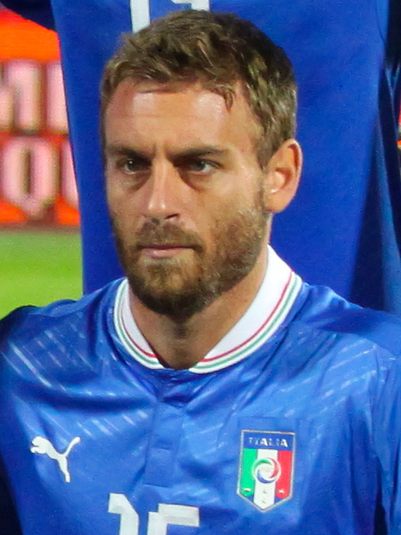
Daniele De Rossi
Daniele De Rossi (Roma, 24 luglio 1983) è un allenatore di calcio, dirigente sportivo ed ex calciatore italiano, di ruolo centrocampista, tecnico del Genoa.
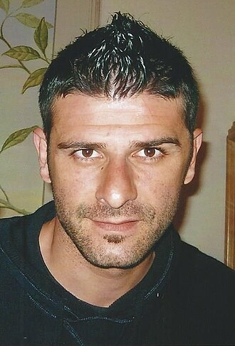
Vincenzo Iaquinta
Vincenzo Iaquinta (Crotone, 21 novembre 1979) è un ex calciatore italiano, di ruolo attaccante. Con la nazionale italiana è diventato campione del mondo nel 2006.
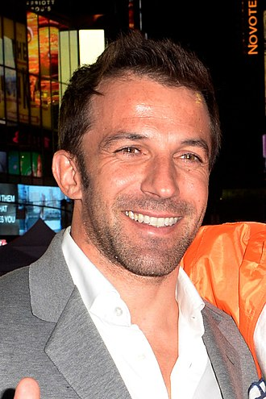
Alessandro Del Piero
Alessandro Del Piero (Conegliano, 9 novembre 1974) è un ex calciatore italiano, di ruolo attaccante. Con la nazionale italiana è diventato campione del mondo nel 2006.